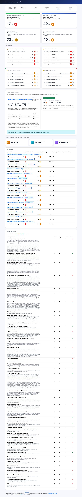
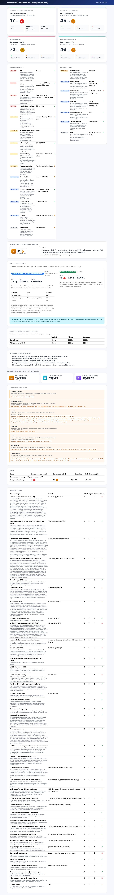

nr-analysis-cli
Un CLI Node.js qui audite l'empreinte environnementale, l'accessibilité et la sécurité d'un site web, page par page, sans ouvrir un navigateur à la main.
Auditer l'écoconception d'un site à la main, extension par extension, page par page, ne tient pas la route au-delà de trois URL. Ce CLI reprend le moteur de règles de l'extension Chrome GreenIT-Analysis et l'exécute en tâche de fond, sur autant de pages qu'on veut, dans un vrai Chromium piloté par Puppeteer plutôt que dans une simulation.
On lui donne une URL, une liste d'URL, un sitemap ou un parcours utilisateur décrit en YAML. Il ouvre chaque page avec le cache et les service workers désactivés pour ne pas fausser les mesures, applique 37 règles d'écoconception (RGESN, GR491, WSG), 17 contrôles d'accessibilité, 14 contrôles de sécurité serveur et 7 contrôles de performance. Il estime aussi le CO₂, l'eau et l'énergie consommés par visite, avec le modèle Sustainable Web Design v4 et un calibrage ARCEP/ADEME pour les sites hébergés ou visités en France. Le résultat sort en HTML, en Excel, ou part dans InfluxDB pour du suivi continu.
C'est pour les équipes qui doivent documenter un plan d'écoconception, les agences qui auditent des sites clients, ou pour qui veut comparer un site avant et après une refonte.
Essayer en cinq minutes
git clone https://github.com/Institut-du-Numerique-Responsable/nr-analysis-cli.git
cd nr-analysis-cli
npm install
npm link
nr analyse --url https://institutnr.org/Le rapport HTML s'ouvre directement dans le navigateur. Pour une liste de pages, un fichier texte avec une URL par ligne suffit : nr analyse urls.txt.
Cinq façons de lui donner des pages
| Mode | Commande |
|---|---|
| Une URL | nr analyse --url https://exemple.fr |
| Une liste plate | nr analyse urls.txt |
| Crawl des liens internes | nr analyse --url https://exemple.fr --recursive --depth 3 --max_pages 100 |
| Depuis un sitemap | nr parseSitemap https://exemple.fr/sitemap.xml url.yaml |
| Parcours utilisateur | fichier YAML décrivant les actions click, text, scroll, select, press |
Les pages derrière authentification s'auditent avec --login, qui rejoue une séquence de connexion avant l'analyse. On peut simuler sept appareils, du poste de bureau à l'iPhone, passer par un proxy, injecter des en-têtes HTTP, et sortir les rapports en français ou en anglais. Le flag --ci coupe la barre de progression pour l'intégration continue.
Ce que ça sort



Quatre axes, un score chacun
| Axe | Ce qui est vérifié |
|---|---|
| Environnement | 37 règles d'écoconception : poids, requêtes, images, polices, tracking… |
| Accessibilité | 12 contrôles Tanaguru/RGAA + 5 contrôles complémentaires |
| Sécurité | 14 contrôles serveur : TLS, en-têtes HTTP, cookies, DNSSEC |
| Performance serveur | 7 contrôles d'infrastructure : HTTP/2, compression, cache, CDN |
Chaque règle rend un niveau A, B ou C. Le score d'un axe est la moyenne de ces niveaux pondérée par la criticité de la règle, et se traduit en grade de A à G. Le détail complet des 75 règles et contrôles est dans le guide détaillé.
Les chiffres produits
À côté des quatre scores d'axe, chaque page reçoit un EcoIndex, qui mesure la complexité structurelle (nœuds DOM, requêtes, poids), et un score de synthèse qui croise cet EcoIndex avec l'empreinte carbone SWDM v4. Les deux modèles sont complémentaires : le premier ignore le mix électrique, le second en dépend. Quand ils divergent, l'outil le signale par un indice de confiance et explique lequel tire le score vers le bas.
| Métrique | Unité |
|---|---|
| CO₂ par visite, et pondéré par le cache | g CO₂eq |
| Eau par visite | cL |
| Énergie par visite | Wh |
| CO₂, eau et énergie pour 1 million de visites | kg CO₂eq, L, kWh |
| Hébergement vert, vérifié auprès de la Green Web Foundation | oui / non |
| Intensité carbone du terminal, du réseau et du datacenter | gCO₂/kWh |
Le pays du datacenter est détecté automatiquement, par en-têtes CDN puis géolocalisation IP. On peut le forcer, comme on peut forcer chaque intensité carbone pour brancher ses propres données.
Ce qu'on en fait
Sur un audit multi-pages, le rapport classe les pires pages en environnement et en accessibilité, les meilleures, et les règles qui échouent le plus souvent sur l'ensemble du site. Il produit des recommandations tirées des mesures : DOM à simplifier, requêtes à consolider, images à convertir, hébergement à migrer. Les contrôles d'accessibilité remontent les éléments fautifs, extraits du DOM, pour aller les corriger directement.
Documentation
- README : installation et usage rapide
- Guide détaillé : toutes les options, référentiel complet des règles
- Architecture et guide du contributeur : comment le code est organisé, comment ajouter une règle
- Journal des modifications
- Politique de sécurité
- English documentation
Licence
AGPL-3.0-or-later. L'outil hérite de composants dérivés de GreenIT-Analysis et d'EcoMeter, sous la même licence. En clair : l'usage commercial est permis, mais si vous déployez une version modifiée comme service accessible à des tiers, vous devez en publier le code source. Les détails sont dans le guide détaillé.